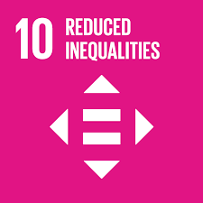
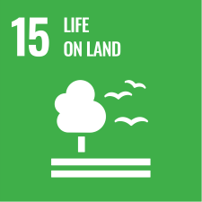
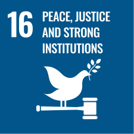

Ugnayan ng Sustainable Development Goals (SDGs) sa Suliranin
Ang patuloy na pagmimina sa Surigao del Sur ay hindi lamang usaping pang-ekonomiya, kundi isang isyung may direktang epekto sa karapatan, kabuhayan, at kalikasan ng mga katutubong komunidad. Ang proyekto naming Lakbay-Luntian ay nakatuon sa pagtaas ng kamalayan tungkol sa sapilitang pagpapaalis sa mga Manobo at iba pang katutubo, pati na rin sa epekto ng pagmimina sa kapaligiran.
SDG 10 – Pagbawas ng Hindi Pantay na Pag-unlad (Reduced Inequalities)

- Ang pagmimina ay nagdudulot ng hindi pantay na distribusyon ng yaman at oportunidad.
- Ang mga katutubo ay madalas na naaapi, sapilitang pinapalikas sa kanilang lupang ninuno, habang nakikinabang ang malalaking korporasyon.
- Layunin ng proyekto na hikayatin ang patas na pagtrato at pagkilala sa karapatan ng mga katutubo.
SDG 15 – Buhay sa Lupa (Life on Land)

- Ang labis na pagmimina ay nagdudulot ng pagkasira ng kagubatan, pagkawala ng biodiversity, at pinsala sa mga ecosystem.
- Mahalaga ang pangangalaga at pagpapanumbalik ng mga lupang ninuno upang maprotektahan ang kabuhayan at kalikasan.
SDG 16 – Kapayapaan, Katarungan, at Matat ag na Institusyon (Peace, Justice, and Strong Institutions)

- Ang sapilitang pagpapaalis, militarisasyon, at paglabag sa karapatang pantao ay nagpapakita ng kahinaan sa pagpapatupad ng batas at proteksyon ng komunidad.
- Ang proyekto ay naglalayong itaguyod ang katarungan, pananagutan, at pagpapatibay ng mga institusyon na sumusunod sa batas, tulad ng Indigenous Peoples’ Rights Act (RA 8371).